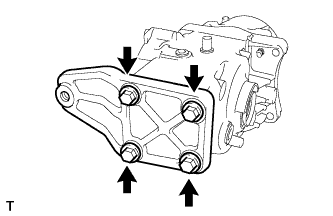
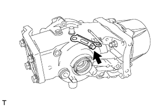
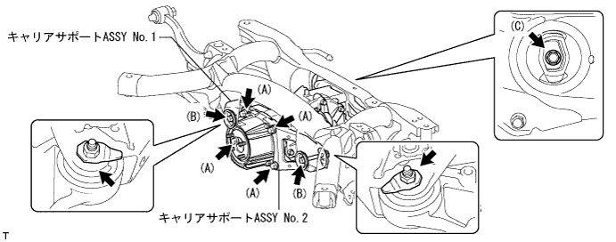
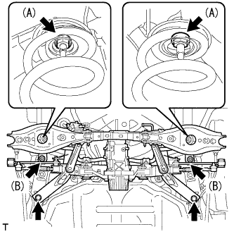
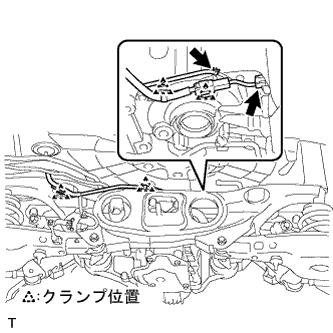
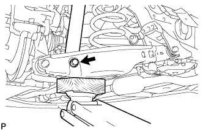
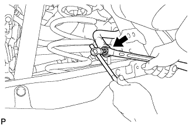
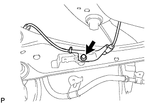
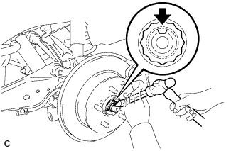
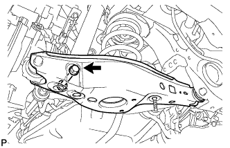

Differential Carrier Assembly Rear (4WD) Installation |
| 1. Install Rear Differential Support |
 |
Install the rear differential support with 4 new bolts.
| 2. Install Connector Clamp Bracket |
 |
Install the connector clamp bracket with the bolt.
| 3. Install Differential Carrier Assembly Rear |
Install the rear differential carrier assembly to the rear differential mount cushion No.1 with a new bolt (C in the illustration).

Install the rear differential support assembly No.1 and rear differential support assembly No.2 to the rear suspension member with 2 new bolts (B in the illustration) and 2 nuts.
Install the rear differential support assembly No.1 and rear differential support assembly No.2 to the rear differential carrier assembly with 4 new bolts (A in the illustration).
| 4. Install Rear Suspension Member Sub-assembly |
Hold the rear suspension member w/ differential with an engine lifter.
 |
Install the rear suspension member w/ differential and 2 rear suspension member stoppers lower with the 2 bolts and 4 nuts.
 |
Connect the connector, 4 clamps and hose).
| 5. Temporarily Tighten Shock Absorber Assembly Rear LH |
 |
Support the rear suspension arm assembly No.2 LH with a block of wood in between.
 |
Temporarily tighten the rear shock absorber assembly LH with the bolt and nut.
| 6. Temporarily Tighten Shock Absorber Assembly Rear RH |
| 7. Install Rear Stabilizer Link Assembly LH |
 |
Temporarily tighten the rear stabilizer link assembly LH and 2 rear stabilizer cushions with the nut as shown in the illustration.
 |
Install the rear stabilizer link assembly LH to the rear stabilizer bar with the nut.
|
Fully tighten the nut.
| 8. Install Rear Stabilizer Link Assembly RH |
| 9. Install Rear Drive Shaft Inboard Joint Snap Ring LH |
Install a new snap ring.
| 10. Install Rear Drive Shaft Inboard Joint Snap Ring RH |
| 11. Install Rear Drive Shaft Assembly LH |
 |
Face the snap ring opening downward.
Align the splines of the inboard joint assembly, and using a brass bar and hammer, tap in the drive shaft assembly evenly.
| 12. Install Rear Drive Shaft Assembly RH |
| 13. Install Rear Axle Carrier LH |
 |
With a block of wood in between, jack up the rear suspension arm assembly No.2 until it is horizontal, and hold the rear axle carrier.
 |
Install the rear axle carrier to the upper control arm assembly rear LH, and temporarily tighten the bolt and nut.
| 14. Install Rear Axle Carrier RH |
| 15. Temporarily Tighten Rear Suspension Arm Assembly NO.2 LH |
 |
Install the rear suspension arm assembly No.2 LH to the rear axle carrier, and temporarily tighten the bolt and nut.
| 16. Temporarily Tighten Rear Suspension Arm Assembly NO.2 RH |
| 17. Install Trailing Arm Assembly Rear LH |
 |
Install the trailing arm assembly rear to the rear axle carrier with the 2 bolts.
| 18. Install Trailing Arm Assembly Rear RH |
| 19. Temporarily Tighten Rear Suspension Arm Assembly NO.1 LH |
 |
Insert the stud of the rear suspension arm assembly No.1 LH into the rear axle carrier, and temporarily tighten it with the nut.
 |
Install the rear suspension arm assembly No.1 LH to the rear suspension member, and temporarily tighten it with the bolt and nut.
|
Fully tighten the nut of the rear suspension arm assembly No.1 LH.
| 20. Temporarily Tighten Rear Suspension Arm Assembly NO.1 RH |
| 21. Install Height Control Sensor Sub-assembly Rear (w/ Discharge Headlight) |
 |
Install the height control sensor assembly (rear) with the 2 bolts.
 |
Connect the connector and engage the clamp.
| 22. Install Rear Axle Hub & Bearing Assembly LH |
 |
Install the rear axle hub & bearing assembly LH to the rear axle carrier with the 4 bolts.
| 23. Install Rear Axle Hub & Bearing Assembly RH |
| 24. Install Rear Disc LH |
 |
) Align the matchmarks on the disc and axle hub, and install the disc.
| 25. Install Rear Disc RH |
| 26. Install Rear Disc Brake Caliper Assembly LH |
 |
Install the rear disc brake caliper assembly LH with the 2 bolts.
| 27. Install Rear Disc Brake Caliper Assembly RH |
| 28. Connect Parking Brake Cable Assembly NO.3 |
 |
Install the parking brake cable assembly NO.3 with the 2 bolts.
| 29. Connect Parking Brake Cable Assembly NO.2 |
| 30. Install Parking Brake Lever Protector |
 |
Install the parking brake lever protector to the parking brake cable assembly No.3.
| 31. Install Speed Sensor Rear LH |
 |
Install the clamp.
 |
Install the speed sensor rear LH with the bolt.
| 32. Install Speed Sensor Rear RH |
| 33. Install Rear Axle Shaft Nut LH |
 |
Using a chisel and hammer, stake the rear axle shaft nut.
| 34. Install Rear Axle Shaft Nut RH |
| 35. Temporarily Tighten Propeller Shaft with Center Bearing Assembly |
 |
Align the matchmarks on the transfer assembly and propeller shaft assembly.
Temporarily tighten the propeller with center bearing shaft assembly with 4 new nuts and 4 washers.
 |
Align the matchmarks on the differential carrier assembly and propeller shaft assembly.
Temporarily tighten the propeller with center bearing shaft assembly with 4 new nuts and 4 washers.
 |
Temporarily tighten the center support bearing assembly with the 2 bolts, with the center support bearing washers in place.
| 36. Fully Tighten Propeller Shaft with Center Bearing Assembly |
Fully tighten the 4 nuts installing the propeller shaft assembly to the transfer assembly.
Fully tighten the 4 nuts installing the propeller shaft assembly to the differential carrier assembly.
 |
Check that the housing center line of the center support bearing assembly is at a right angle to the propeller shaft axis.
Fully tighten the 2 installation bolts of the center support bearing assembly.
| 37. Inspect and Adjust Joint Angle |
Before measuring the angle, settle each part using the following procedure.
Rotate the propeller shaft several times by hand.
Place a jack under the differential and move it up and down.
Using SST, measure the installation angle of the intermediate shaft assembly (A in the illustration).
| Angle | |
|---|---|
| A | -2°46’ ± 1° |
Using SST, measure the installation angle between the intermediate shaft assembly (A in the illustration) and propeller shaft assembly (B in the illustration).
| Angle | |
|---|---|
| A-B | 1°29’ ± 1°30’ |
Using SST, measure the installation angle between the propeller shaft assembly (B in the illustration) and differential (C in the illustration).
| Angle | |
|---|---|
| B-C | 2°10’ ± 1° |

If the result is not as specified, replace the adjusting washers at the center support bearing with appropriate ones.
| Part No. | Thickness (mm) |
|---|---|
| 90201-10123 | 2.0 |
| 90201-10081 | 4.5 |
| 90201-10083 | 6.5 |
| 38. Install Front Floor Heat Insulator NO.2 |
 |
Install the front floor heat insulator No.2 with the 4 bolts.
| 39. Install Exhaust Pipe Assembly Center |
 |
Install the front floor brace center with the 4 bolts.
| 40. Install Exhaust Tail Pipe Assembly |
Compression Spring Inspection
 |
Using a vernier caliper, measure the free length of the compression spring.
 |
Gasket Installation
Insert a new gasket into the exhaust center pipe assembly as far as it will go by hand.
Install the exhaust tail pipe assembly with the 2 exhaust pipe supports.
 |
Install the exhaust tail pipe assembly to the exhaust center pipe assembly with the 2 bolts and 2 compression springs.
| 41. Add Differential Oil |
Using a socket hexagon wrench 10mm, remove the rear differential filler plug and gasket.
Add Hypoid Gear Oil SX.
Check the oil level.
Using a socket hexagon wrench 10mm, tighten the rear differential filler plug with a new gasket.
| 42. Inspect Differential Oil |
| 43. Install Rear Tire |
| 44. Stabilize Suspension |
Lower the vehicle and bounce it up and down several times to stabilize the suspension.
| 45. Fully Tighten Shock Absorber Assembly Rear LH |
 |
Hold the nut and turn the bolt to fully tighten the rear shock absorber assembly LH.
| 46. Fully Tighten Shock Absorber Assembly Rear RH |
| 47. Fully Tighten Upper Control Arm Assembly Rear LH |
 |
With a block of wood in between, jack up the rear suspension arm assembly No.2 LH to the standard vehicle height condition as shown in the illustration to apply load to the rear suspension.
 |
Tighten the upper control arm assembly rear LH with the 2 bolts and 2 nuts.
| 48. Fully Tighten Upper Control Arm Assembly Rear RH |
| 49. Fully Tighten Rear Suspension Arm Assembly NO.2 LH |
|
Fully tighten the installation bolt of the rear suspension arm assembly No.2 LH.
| 50. Fully Tighten Rear Suspension Arm Assembly NO.2 RH |
| 51. Fully Tighten Rear Suspension Arm Assembly NO.1 LH |
|
Fully tighten the bolt of the rear suspension arm assembly No.1 LH (rear suspension member side).
| 52. Fully Tighten Rear Suspension Arm Assembly NO.1 RH |
| 53. Install Battery Negative Terminal |
| 54. Setting Procedure When Disconnecting/Reconnecting Battery Terminal |
)| 55. Inspect for Exhaust Gas Leaks |
| 56. Inspect and Adjust Rear Wheel Alignment |
)| 57. Headlight Leveling ECU Assembly Initialization Procedure |
)| 58. Preparation for Headlight Aiming |
)Adjust the tire pressure to the specified value.
Have 1 person sit in the driver seat.
Start the engine and keep the battery in a charging condition.
 |
Set the leveling switch dial to 0. (Halogen type headlight)
| 59. Headlight Aiming Adjustment (Using Low Beam Tester) |
Set the distance between the tester and the headlight lens to the tester's specified value.
Position the tester so that it squarely faces the vehicle.
 |
Set up the headlight tester.
Set the angle adjustment knobs of the tester to 10cm downward and 0cm left/right.
 |
Align the condenser lens of the tester with the center of the headlight.
| Mark | |
|---|---|
| A | Low Beam Bulb Center |
| B | High Beam Bulb Center |
Take measures so that the light from the other headlight does not affect the measurement.
Turn on the headlights on low beam.
Adjust the low beam aim according to the instruction manual of the headlight tester used.

| 60. Headlight Luminous Intensity Inspection (Using Low Beam Tester) |
After adjusting the aim, inspect the luminous intensity with the headlight tester.
| 61. Headlight Aiming Adjustment (Using Low Beam Screen) |
Prepare a piece of thick white paper.
 |
Prepare an aiming screen as shown in the illustration. (Discharge type headlight)
 |
Prepare an aiming screen as shown in the illustration. (Halogen type headlight)
 |
Set the distance between the tester and headlight lens to 3m.
Position the tester so that it squarely faces the vehicle.
|
Set up the headlight tester.
Align the center of the tester condenser lens with the headlight center.
| Mark | |
|---|---|
| A | Low Beam Bulb Center |
| B | High Beam Bulb Center |
Align the center hole of the adjustment screen with the center of the tester condenser lens, and attach it with tape or equivalent.
Turn on the headlights on low beam.
If it deviates significantly from the reference line, adjust the low beam aim so that the cut-off line aligns with the reference line.
| 62. Headlight Luminous Intensity Inspection (Using Low Beam Screen) |
Set the distance between the tester and the headlight lens to the tester's specified value.
Position the tester so that it squarely faces the vehicle.
|
Set up the headlight tester.
Set the angle adjustment knobs of the tester to 11cm downward and 23cm to the left.
|
Align the condenser lens of the tester with the center of the headlight.
| Mark | |
|---|---|
| A | Low Beam Bulb Center |
| B | High Beam Bulb Center |
Take measures so that the light from the other headlight does not affect the measurement.
Turn on the headlights on low beam.
After aiming adjustment, inspect with the headlight tester.
| 63. Headlight Aiming Adjustment (Using High Beam Tester) |
Set the distance between the tester and the headlight lens to the tester's specified value.
Position the tester so that it squarely faces the vehicle.
|
Set up the headlight tester.
Set the angle adjustment knobs of the tester to 1/5cm of the headlight center height downward and 0cm for both left and right. (LH headlight)
Set the angle adjustment knobs of the tester to 1/5cm of the headlight center height downward and 5cm to the left. (RH headlight)
|
Align the condenser lens of the tester with the headlight center.
| Mark | |
|---|---|
| A | Low Beam Bulb Center |
| B | High Beam Bulb Center |
Take measures so that the light from the other headlight does not affect the measurement.
Turn on the headlights with high beam.
Adjust the high beam aim according to the handling procedure of the headlight tester used.
| 64. Headlight Luminous Intensity Inspection (Using High Beam Tester) |
After adjusting the aim, inspect the luminous intensity with the headlight tester.